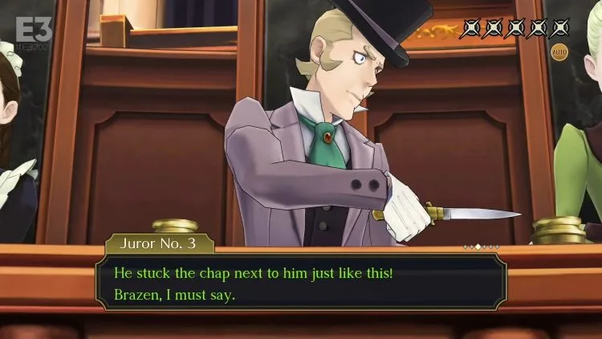

Deltarune
.jpg)
Deltarune is a role-playing video game developed and published by Toby Fox. It serves as a follow-up to the critically acclaimed game Undertale, offering players a new adventure in a different world.
Trailer
- Unique Storytelling: Deltarune presents an engaging and intricate storyline that keeps players hooked from start to finish. The game explores themes of friendship, choices, and the consequences of one's actions, offering a thought-provoking narrative experience.
- Charming Characters: The game features a cast of memorable and lovable characters, each with their own distinct personalities and quirks. From the main protagonist Kris to the mischievous Susie and the enigmatic Ralsei, the characters add depth and humor to the game.
- Strategic Battles: Deltarune introduces a new battle system that combines turn-based combat with interactive elements. Players must strategically choose their actions and manage their resources to overcome challenging encounters, making each battle a thrilling experience.
- Immersive Soundtrack: Just like its predecessor, Deltarune delivers an outstanding soundtrack that complements the gameplay and enhances the overall atmosphere. The music varies from upbeat and catchy tunes to emotional melodies, further immersing players in the game's world.
- Artistic Visuals: The game features charming retro-style graphics with vibrant colors and detailed pixel art. The visuals create a nostalgic feel while still offering a unique and visually appealing aesthetic.
- Short Length: One of the minor drawbacks of Deltarune is its relatively short duration. The game consists of multiple chapters, but each chapter is shorter compared to a full-length game. However, this is understandable considering the episodic nature of the release.
Platform: PC, Nintendo Switch, PlayStation 4, Xbox One
Release Date: October 31, 2018 (Chapter 1)
Developer: Toby Fox
Publisher: Toby Fox
Overall, Deltarune is a captivating RPG that successfully captures the charm and spirit of its predecessor while offering a fresh and intriguing experience. With its engaging storytelling, delightful characters, strategic battles, memorable soundtrack, and artistic visuals, Deltarune is a must-play for fans of Undertale and anyone looking for a unique and thought-provoking adventure.
The Great Ace Attorney: Chronicles

The Great Ace Attorney: Chronicles is a compilation of two courtroom drama visual novel games developed and published by Capcom. Set in the late 19th century, players step into the shoes of Ryunosuke Naruhodo, an aspiring defense attorney, as he tackles challenging cases and uncovers the truth in a unique historical setting.
Trailer
- Compelling Storyline: The game presents a captivating narrative filled with intriguing mysteries and courtroom battles. The Great Ace Attorney: Chronicles masterfully combines historical elements with thrilling legal drama, creating a truly immersive experience.
- Engaging Characters: From the determined protagonist Ryunosuke Naruhodo to the iconic detective Herlock Sholmes and a diverse cast of witnesses and adversaries, the game boasts a rich ensemble of well-written and memorable characters.
- Interactive Courtroom Gameplay: The game features intense courtroom trials where players must gather evidence, examine witnesses, and present compelling arguments to defend their clients. The unique "Dance of Deduction" mechanic adds an extra layer of excitement to the proceedings.
- Immersive Setting: The game's setting in the late 19th century provides a fresh and distinctive backdrop for the courtroom drama. The attention to detail in recreating the historical era adds depth and authenticity to the overall experience.
- Beautiful Artwork and Animation: The Great Ace Attorney: Chronicles boasts stunning artwork and fluid animation that brings the characters and courtroom scenes to life. The expressive character designs and captivating visual effects enhance the storytelling.
- Superb Localization: The English localization of the game maintains the charm and wit of the original Japanese version, with clever wordplay and well-crafted dialogue that keeps players engaged throughout the game.
- Slow Pacing: Some players may find that the game's deliberate pacing and extensive dialogue segments slow down the overall progression. However, this aspect is inherent to the visual novel genre and contributes to the depth of the storytelling.
Platform: Nintendo Switch, PlayStation 4, PC
Release Date: July 27, 2021
Developer: Capcom
Publisher: Capcom
The Great Ace Attorney: Chronicles is a must-play for fans of the Ace Attorney series and those who enjoy immersive storytelling and courtroom dramas. With its compelling storyline, engaging characters, interactive courtroom gameplay, immersive setting, beautiful artwork, and superb localization, the game offers a captivating experience that will keep players invested from start to finish.
.JPG)